| data-transition-duration: | |
|---|---|
| 1000 | |
| skip-help: | true |
| css: | style.css |
| substep: | true |
| slide-numbers: | true |
|---|
Memory Management
مدیریت حافظه
Memory of a process
حافظهٔ یک فرآیند
بخشهای درونی یک فرآیند در حالت کلی
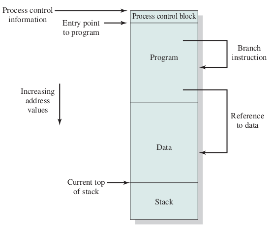مشخص شدن آدرسهای حافظهٔ یک فرایند از زمان نوشته شدن برنامه تا زمان اجرای فرآیند
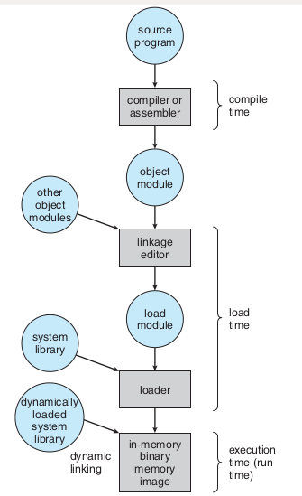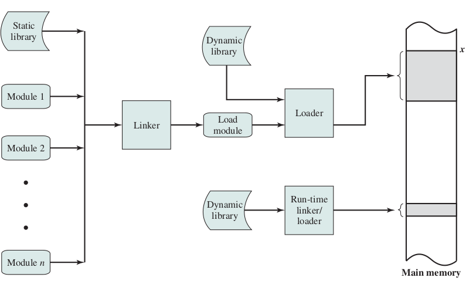
address binding, loader

address binding, linker

address binding, absolute and relocate loader

چگونگی کارکرد پیوند زدن تابعها از پروندههای گوناگون

تخصیص حافظهٔ پیوسته به فرآیندها
بخشبندی ثابت حافظه

تخصیص حافظه به فرآیندها در حالت بخشبندی ثابت حافظه
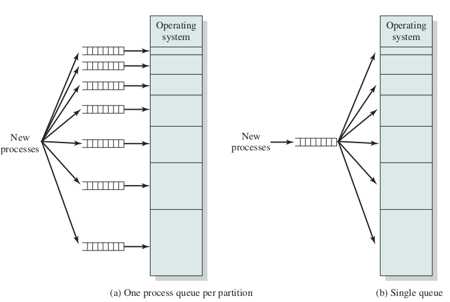تکه تکه شدن (پراکندگی) داخلی حافظه Internal Memory Fragmentation
به کارگیری حافظهٔ نسبی برای نگهداری مکان چندین فرآیند در حافظه
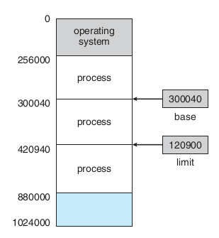حفاظت از حافظه به کمک ثباتهای پایه و حد
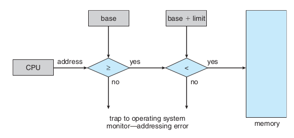بخشبندی پویای حافظه
شمارندهٔ برنامه و فرآیندهای درون حافظه
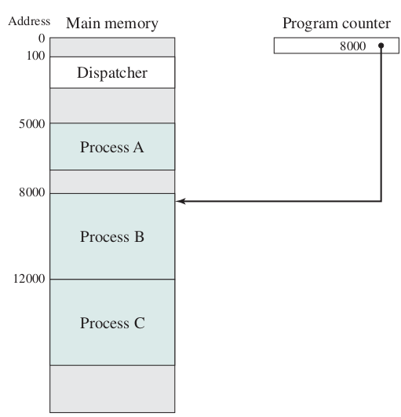ارتباط میان آدرس فیزیکی و آدرس منطقی در آدرس دهی نسبی به کمکِ واحد مدیریت حافظه (MMU)

حافظهٔ فرآیندها در سیستم عامل CTSS
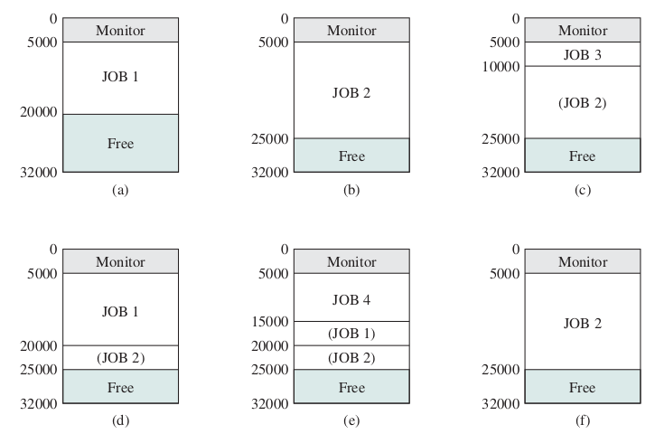اثر به کارگیری حافظهٔ پویا
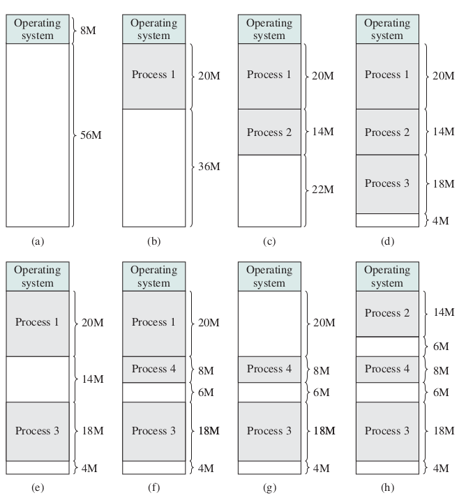برگزیدن فضای آزاد برای فرآیند تازه وارد
- اولین برازش(First Fit)
- بهترین برازش(Best Fit)
- بدترین برازش(Worst Fit)
- درپی برازش (برازش بعدی Next Fit)

تکه تکه شدن (پراکندگی یا پارگی) خارجی External Fragmentation
حافظهٔ پویای رفاقتی Buddy system
 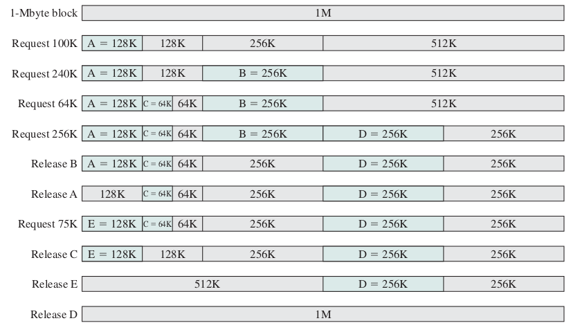
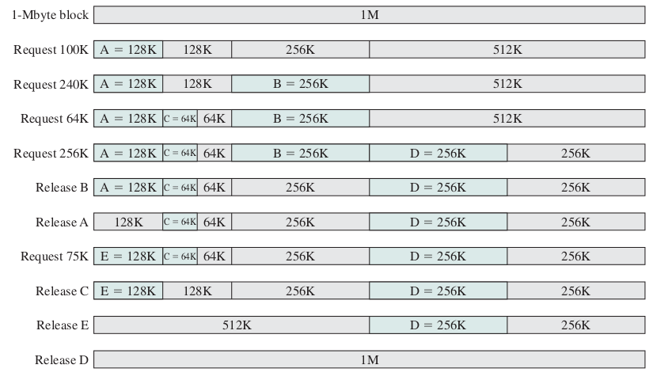
الگوریتم اجرا

جابجا کردن فرآیند میان حافظهٔاصلی و حافظهٔ جانبی (دیسک)، شکل سادهای از حافظهٔ مجازی

روی هم انداختن بخشهای یک فرآیند (overlay)
برنامه به صورت چند تکه نوشته میشود که تکههای مجزای آن نیازی نیست همزمان در حافظه باشند و بخشی مقیم در حافظه از فرآیند تکههای دیگر را میان حافظه و دیسک جابجا میکند.
حافظهٔ صفحهبندی شده
شکل سادهٔ صفحهبندی
 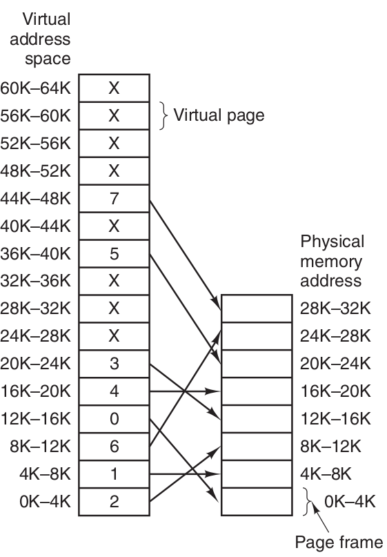
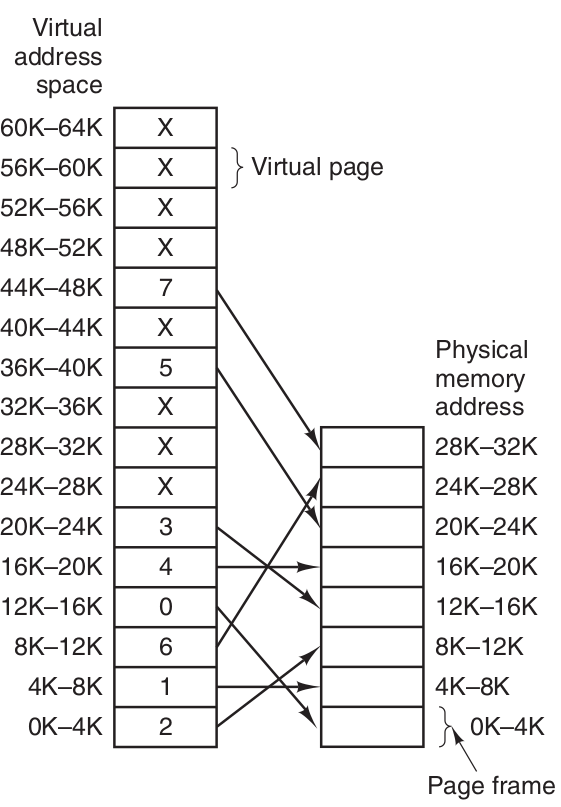

سختافزار صفحهبندی
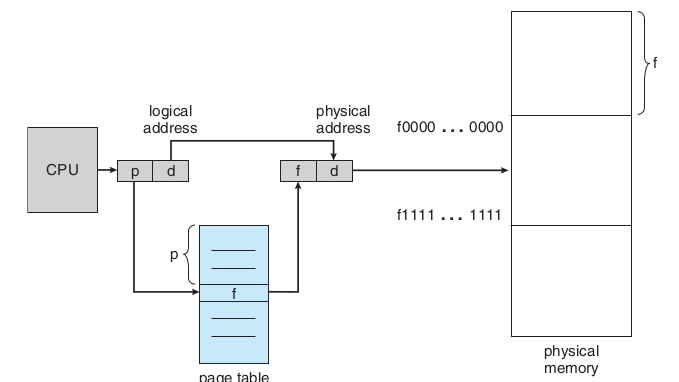بخشبندی ثبات آدرس در حافظهٔ صفحهبندی شده

یک حافظهٔ ۳۲ بایتی با صفحههای ۴ بایتی

تغییرات فضاهای آزاد پیش و پس از تخصیص حافظه به یک فرآیند
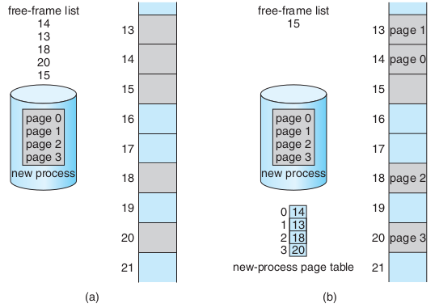تغییرات حافظه برای چند فرآیند


تبدیل آدرس منطقی به آدرس فیزیکی در حافظهٔ صفحهبندی شده
 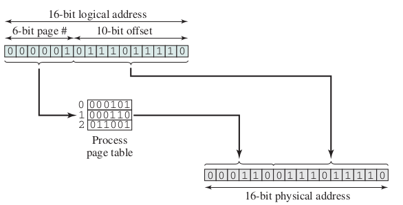
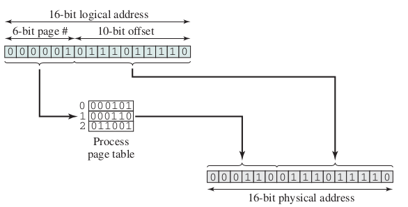
اندازهٔ صفحه
کوچک یا بزرگ بودن اندازهٔ صفحهها (همان قابهای حافظه) بر روی موضوعهای گوناگونی اثر دارد.
حفاظت از حافظهٔ صفحهبندی شده
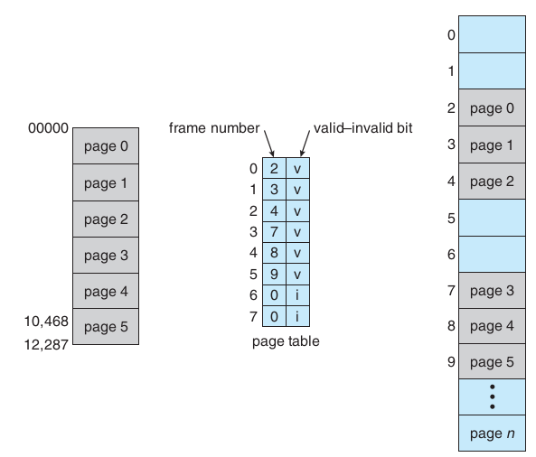اشتراک گذاری در حافظهٔ صفحهبندی شده


تمرین: یک حافظهٔ ۱۶ کیلوبایتی با اندازهٔ قاب ۱ کیلوبایت داریم که تعدادی فرآیند میخواهیم در آن بگذاریم با اندازههای متفاوت. مشخص کنید تغییرات حافظه چگونه خواهد بود. چگونگی اجرای فرآیندها را توضیح دهید. دقت کنید مراحل پس از بار شدن فرآیند در حافظه (حالت جدید فرآیند) باید به صورت کاملا سختافزاری و خودکار انجام شود. با فرض این که سیستم عامل یک کیلوبایت جا میگیرد و در قاب صفر گذاشته شده است.
همین تمرین به جای کیلوبایت مگابایت بگذارید.
تمرین: در حالت صفحه بندی شده چگونه فرآیند از حافظهٔ خود میتواند بیرون بزند یا به عبارت دیگر دسترسی غیر مجاز به دیگر قابهای حافظه داشته باشد؟
چه نوع پراکندگی و چگونه باقی میماند.
بدی به کارگیری حافظهٔ صفحهبندی شده چیست؟
تبدیل آدرس منطقی به فیزیکی
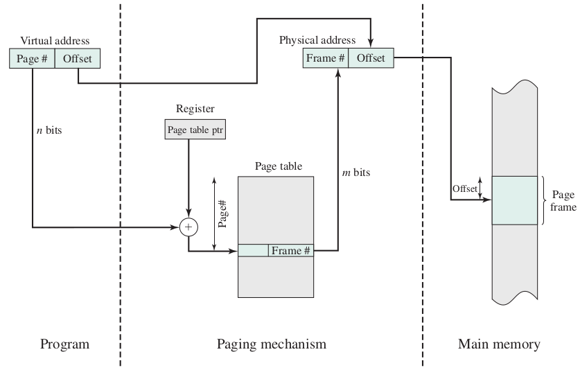حافظهٔ نهان
سلسه مراتب حافظه
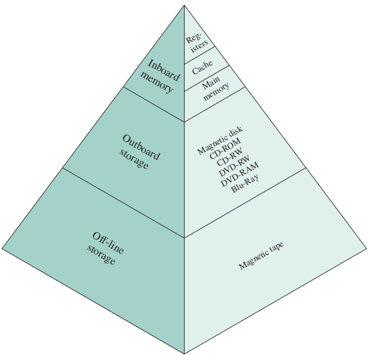زمان دسترسی مؤثر Effective Access Time (EAT) بدون صفحهبندی
- tm : زمان دسترسی به حافظهی اصلی
- tc : زمان دسترستی به حافظهی نهان
- hc : ضریب اصابت به حافظهی نهان
زمان دسترسی مؤثر برابر خواهد بود با
برای نمونه اگر ضریب اصابت (یا نسبت اصابت) برای 0.95 باشد و سرعت دسترسی به حافظهٔ اصلی 100 میکرو ثانیه باشد و سرعت دسترسی حافظهٔ نهان ۱ میکرو ثانیه باشد در این صورت زمان دسترسی مؤثر برابر خواهد بود با
زمان دسترسی مؤثر برابر ۵٫۱ میکرو ثانیه خواهد شد.
نمودار اثر به کارگیری حافظهٔ نهان در افزایش سرعت کار با حافظه
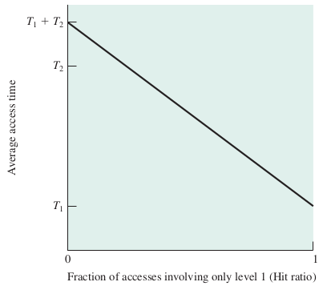زمان دسترسی مؤثر Effective Access Time (EAT) با صفحهبندی
زمان دسترسی مؤثر = زمان دسترسی به جدول صفحه + زمان دسترسی به حافظه
پس با کاهش سرعت روبرو هستیم.
حافظهٔ اصلی با TLB

زمان دسترسی مؤثر Effective Access Time (EAT) با صفحهبندی همراه با TLB
- tt : زمان دسترسی به حافظهی نهان جدول صفحه
- tc : زمان دسترستی به حافظهی نهان
- tm : زمان دسترسی به حافظهی اصلی
- ht : ضریب اصابت به حافظهی نهان جدول صفحه
- hc : ضریب اصابت به حافظهی نهان
با فرض برابر بودن نسبتهای اصابت و زمانهای یکسان برای دسترسی به حافظهٔ نهان و حافظهٔ TLB خواهیم داشت
صفحهبندی دو سطحی
صفحهبندی دو سطحی

آدرسدهی در صفحهبندی دو سطحی


صفحهبندی دو سطحی ۶۴ بیتی

صفحهبندی چند سطحی
صفحهبندی سه سطحی ۶۴ بیتی

صفحهبندی با جدول صفحهٔ معکوس

تمرین: چرا صفحهبندی دو سطحی و بیشتر نیازمندیم؟
مفهوم حافظهٔ مجازی


آدرسدهی حافظهٔ مجازی


Operation of Paging and Translation Lookaside Buffer
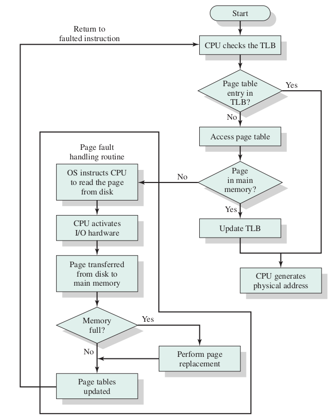
مراحل برخورد با نبود صفحه (نقص صفحه Page fault)

effective access time = (1 − p) × ma + p × page fault time.
effective access time = (1 − p) × (200) + p (8 milliseconds) = (1 − p) × 200 + p × 8,000,000 = 200 + 7,999,800 × p
220 > 200 + 7,999,800 × p,
20 > 7,999,800 × p,
p < 0.0000025
تخصیص قابها Allocation of frames
- درخواستی On demand
- پیش صفحهبندی
روشهای تخصیص تعداد قاب به هر فرآیند
مجموعهٔ مقیم برای هر فرآیند.
- تعداد ثابت fixed-allocation
- تعداد متغیر variable-allocation
بخش کردن قابها میان فرآیندها
- تعداد برابر
- تعداد به نسبت اندازهٔ فرآیند
چگونگی برگزیدن یک قاب برای تخصیص به یک فرآیند
- تخصیص محلی
- تخصیص سراسری
سیاستهای پاک کردن
- پاک کردن درخواستی demand cleaning
- پیش پاک کردن precleaning
کپی کردن هنگام نوشتن
 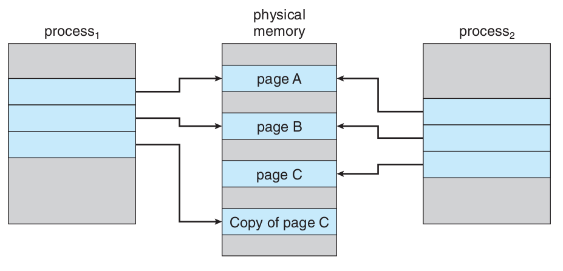
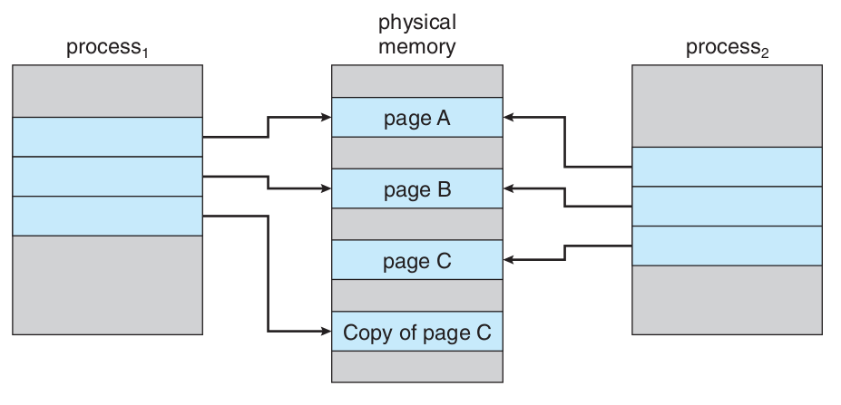
جایگزینی صفحه


frame-allocation algorithm and a page-replacement algorithm.
reference string.
0100, 0432, 0101, 0612, 0102, 0103, 0104, 0101, 0611, 0102, 0103, 0104, 0101, 0610, 0102, 0103, 0104, 0101, 0609, 0102, 0105
At 100 bytes per page, this sequence is reduced to the following reference string:
1, 4, 1, 6, 1, 6, 1, 6, 1, 6, 1
تعداد خطای صفحه بسته به تعداد قابهای تخصیص داده شده
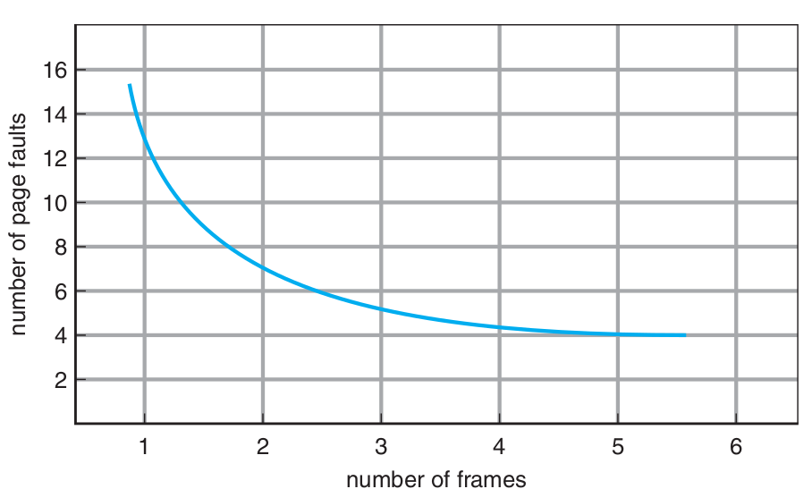الگوریتم جایگزینی FIFO
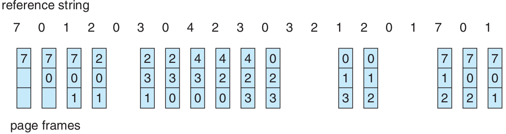Belady’s anomaly: for some page-replacement algorithms, the page-fault rate may increase as the number of allocated frames increases. We would expect that giving more memory to a process would improve its performance. In some early research, investigators noticed that this assumption was not always true. Belady’s anomaly was discovered as a result.

الگوریتم جایگزینی بهینه (Optimal)

الگوریتم جایگزینی LRU

counters
stacks
Figure 9.16 Use of a stack to record the most recent page references.

الگوریتم جایگزینی کمترین فراوانی LFU
الگوریتم جایگزینی بیشترین فراوانی MFU
page-replacement algorithm is based on the argument that the page with the smallest count was probably just brought in and has yet to be used
Not Recently Used Page Replacement Algorithm
الگوریتم جایگزینی بخت دوم (second chance) یا ساعت (clock)
بیت دسترسی access bit یا بیت ارجاع reference bit یا بیت استفاده use bit

الگوریتم جایگزینی ساعت بهبود یافته
بیت تغییر modify bit یا بیت کثیف dirty bit
(بیت دسترسی ، بیت تغییر)
۱. جستجو برای (۰،۰)
۲. جستجو برای (۱،۰) و تغییر بیت دسترسی به صفر
۳. برو به گام ۱
الگوریتم میانگیر صفحه PAGE BUFFERING
کوبیدگی (Thrashing)
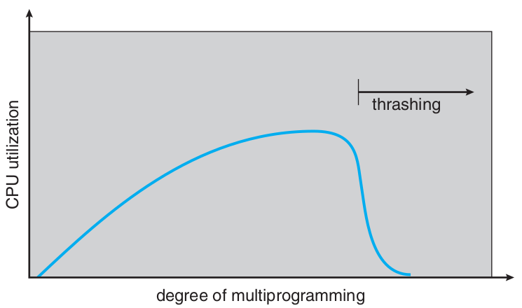اصل محلی بودن
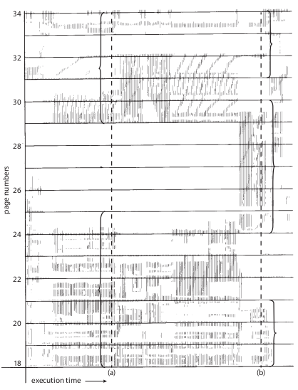روش شناسایی کوبیدگی به کمک مدل مجموعهٔ کاری
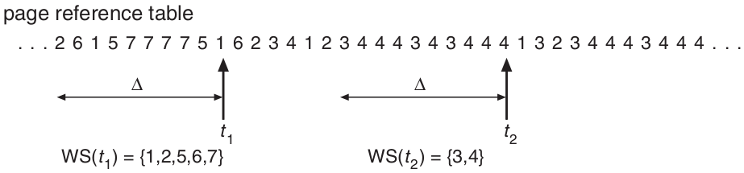

روش شناسایی کوبیدگی به کمک فراوانی خطای نبود صفحه
page-fault frequency ( PFF )

روشهای رویارویی با کوبیدگی پس از شناسایی آن
معلق کردن تعدادی فرآیند برگزیده شده
پروندههای نگاشت شده به حافظه (Memory-Mapped Files)

ورودی و خروجیهای نگاشت شده به حافظه (Memory-Mapped Files)
قفل کردن برخی صفحهها
اثر نوع برنامهنویسی و کامپایلر بر حافظهٔ مجازی
1 void work_with_array_row_by_row(void){ 2 double xa[1000][1000]; 3 int i,j; 4 for(i=0;i<1000;i++) 5 for(j=0;j<1000;j++) 6 xa[i][j]=i*1000+j; 7 }
1 void work_with_array_column_by_column(void){ 2 double xa[1000][1000]; 3 int i,j; 4 for(j=0;j<1000;j++) 5 for(i=0;i<1000;i++) 6 xa[i][j]=i*1000+j; 7 }
قطعهبندی (segmentation)


 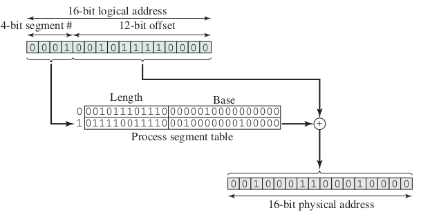
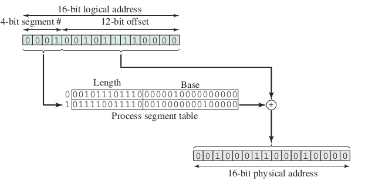
اشتراک گذاری در قطعهبندی
ترکیب قطعهبندی و صفحهبندی
مانند صفحهبندی دو سطحی با این تفاوت که در سطح یکم قطعهبندی انجام میشود و در سطح دوم صفحهبندی انجام میشود.
ساختار حافظهٔ قطعهبندی شده در پردازندههای اینتل ۳۲ بیتی (IA32)
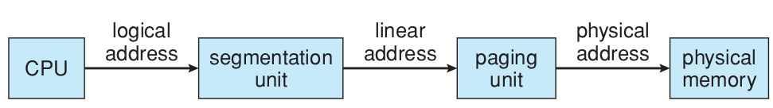
- بیشترین حافظهای که میتواند پشتیبانی کند: 4GB
- بیشترین تعداد قطعه در یک فرآیند: 16KB
- بیشترین تعداد قطعهٔ اختصاصی برای یک فرآیند: 8KB برای دسترسی این بخش local descriptor table ( LDT ) به کار برده میشود.
- بیشترین تعداد قطعهٔ اشتراکی برای یک فرآیند با دیگر فرآیندها: 8KB برای دسترسی به این بخش global descriptor table ( GDT ) به کار برده میشود.
| شمارهٔ قطعه | اختصاصی یا اشتراکی | حفاظت |
|---|---|---|
| 13 | 1 | 2 |
ساختار حافظهٔ صفحهبندی شده در پردازندههای اینتل ۳۲ بیتی (IA32)
| جدولِ صفحهٔ یکم | جدولِ صفحهٔ دوم | جابجایی |
|---|---|---|
| ۱۰ | ۱۰ | ۱۲ |
| جدولِ صفحه | جابجایی |
|---|---|
| ۱۰ | ۲۲ |


ساختار حافظه در پردازندههای «اِ اِم دی» ۶۴ بیتی (AMD64 یا x86_64 )

ساختار حافظه در پردازندههای «آرم» ۳۲ بیتی (ARM32)